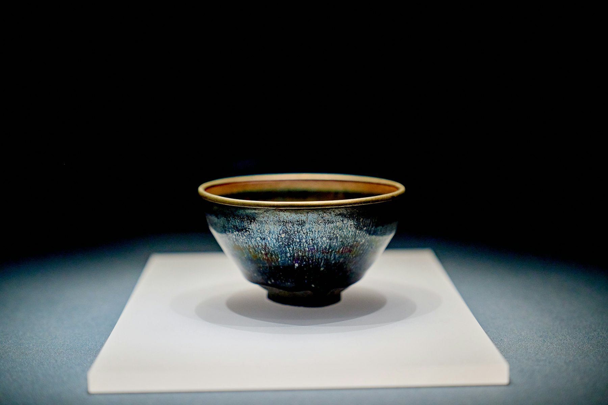
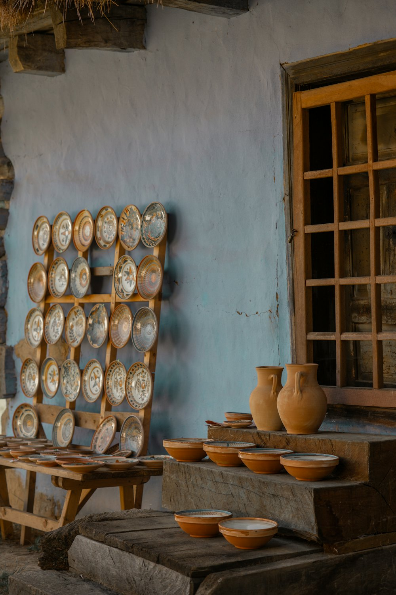

No. 01 — Tamagawagakuen
住宅地の中の、
小さな隠れ家
ギャラリー。A small hidden
gallery in a
quiet neighborhood.
- Media
- ガラス・陶芸・漆器・金工・木彫・クラフトGlass, ceramics, lacquer, metal, wood, craft
- Since
- 2002
- Place
- 町田市玉川学園Tamagawagakuen, Machida
2002
About the gallery
美しい作品と、
ゆっくり向き合う場所。A place to take your
time with beautiful work.
ギャラリー福田は、東京・玉川学園の住宅地の中にある小さな隠れ家的ギャラリーです。ガラス、陶芸、漆器、金工、木彫、クラフトなど、美術品の企画展を開催しています。2002年のオープン以来、たくさんの美しい作品をご紹介してきました。Gallery Fukuta is a small, hidden gallery in a residential part of Tamagawagakuen, Tokyo. It holds curated exhibitions of glass, ceramics, lacquerware, metalwork, wood carving and craft, and has introduced many beautiful works since opening in 2002.

Media
素材から、作品をさがす。Browse by material.
Inquiry
気になる作品の
お問い合わせAsk about a piece
通販も承っております。Instagramで気になった作品があれば、内容を選んでお問い合わせください。メールはいつでもお送りいただけます。Mail order is available. If a piece on Instagram caught your eye, fill this in — emails are welcome any time.
Visit
アクセスAccess
- 住所Address
- 〒194-0041 東京都町田市玉川学園8-13-308-13-30 Tamagawagakuen, Machida, Tokyo 194-0041
- 開廊Open
- 企画展会期中 11:00〜
会期・閉廊時間は正式公開時に掲載During exhibitions, from 11:00
Dates and closing time to be confirmed - TEL
- 042-726-7173（ギャラリーオープン中）042-726-7173 (during opening hours)
- galleryfukuta@gmail.com（いつでもどうぞ）galleryfukuta@gmail.com (any time)
- Blog
- gfukuta.exblog.jp
- @galleryfukuta